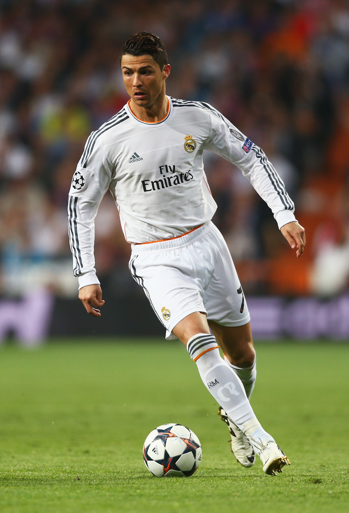

"CR7" redirects here. For other uses, see Cristiano Ronaldo (disambiguation) and CR7 (disambiguation). In this Portuguese name, the first or maternal family name is dos Santos and the second or paternal family name is Aveiro.
Cristiano Ronaldo with Al Nassr in 2023 Personal information Full name Cristiano Ronaldo dos Santos Aveiro[1] Date of birth 5 February 1985 (age 39)[2] Place of birth Funchal, Madeira, Portugal[2] Height 1.87 m (6 ft 2 in)[2][note 1] Position(s) Forward Team information Current team Al Nassr Number 7 Youth career 1992–1995 Andorinha 1995–1997 Nacional 1997–2002 Sporting CP Senior career* Years Team Apps (Gls) 2002–2003 Sporting CP B 2 (0) 2002–2003 Sporting CP 25 (3) 2003–2009 Manchester United 196 (84) 2009–2018 Real Madrid 292 (311) 2018–2021 Juventus 98 (81) 2021–2022 Manchester United 40 (19) 2023– Al Nassr 47 (49) International career‡ 2001 Portugal U15 9 (7) 2001–2002 Portugal U17 7 (5) 2003 Portugal U20 5 (1) 2002–2003 Portugal U21 10 (3) 2004 Portugal U23 3 (2) 2003– Portugal 210 (130) Medal record Signature Cristiano Ronaldo signature *Club domestic league appearances and goals, correct as of 22:05, 27 May 2024 (UTC) ‡ National team caps and goals, correct as of 23:00, 26 June 2024 (UTC)
.jpg) Crstiano Ronaldo dos Santos Aveiro GOIH ComM (Portuguese pronunciation: [kɾiʃˈtjɐnu ʁɔˈnaldu]; born 5 February 1985) is a Portuguese professional footballer who plays as a forward for and captains both Saudi Pro League club Al Nassr and the Portugal national team. Widely regarded as one of the greatest players of all time, Ronaldo has won five Ballon d'Or awards,[note 3] a record three UEFA Men's Player of the Year Awards, and four European Golden Shoes, the most by a European player. He has won 33 trophies in his career, including seven league titles, five UEFA Champions Leagues, the UEFA European Championship and the UEFA Nations League. Ronaldo holds the records for most appearances (183), goals (140) and assists (42) in the Champions League, most appearances (25), assists (8), goals in the European Championship (14), international goals (130) and international appearances (208). He is one of the few players to have made over 1,200 professional career appearances, the most by an outfield player, and has scored over 890 official senior career goals for club and country, making him the top goalscorer of all time.
Crstiano Ronaldo dos Santos Aveiro GOIH ComM (Portuguese pronunciation: [kɾiʃˈtjɐnu ʁɔˈnaldu]; born 5 February 1985) is a Portuguese professional footballer who plays as a forward for and captains both Saudi Pro League club Al Nassr and the Portugal national team. Widely regarded as one of the greatest players of all time, Ronaldo has won five Ballon d'Or awards,[note 3] a record three UEFA Men's Player of the Year Awards, and four European Golden Shoes, the most by a European player. He has won 33 trophies in his career, including seven league titles, five UEFA Champions Leagues, the UEFA European Championship and the UEFA Nations League. Ronaldo holds the records for most appearances (183), goals (140) and assists (42) in the Champions League, most appearances (25), assists (8), goals in the European Championship (14), international goals (130) and international appearances (208). He is one of the few players to have made over 1,200 professional career appearances, the most by an outfield player, and has scored over 890 official senior career goals for club and country, making him the top goalscorer of all time.
Ronaldo began his senior career with Sporting CP, before signing with Manchester United in 2003, winning the FA Cup in his first season. He would also go on to win three consecutive Premier League titles, the Champions League and the FIFA Club World Cup; at age 23, he won his first Ballon d'Or. Ronaldo was the subject of the then-most expensive association football transfer when he signed for Real Madrid in 2009 in a transfer worth €94 million (£80 million). He became a key contributor and formed an attacking trio with Karim Benzema and Gareth Bale which was integral to the team winning four Champions Leagues from 2014 to 2018, including La Décima. During this period, he won back-to-back Ballons d'Or in 2013 and 2014, and again in 2016 and 2017, and was runner-up three times behind Lionel Messi, his perceived career rival. He also became the club's all-time top goalscorer and the all-time top scorer in the Champions League, and finished as the competition's top scorer for six consecutive seasons between 2012 and 2018. With Real, Ronaldo won four Champions Leagues, two La Liga titles, two Copas del Rey, two UEFA Super Cups and three Club World Cups. In 2018, he signed for Juventus in a transfer worth an initial €100 million (£88 million), the most expensive transfer for an Italian club and for a player over 30 years old. He won two Serie A titles, two Supercoppa Italiana trophies and a Coppa Italia, became the inaugural Serie A Most Valuable Player and became the first footballer to finish as top scorer in the English, Spanish and Italian leagues. He returned to Manchester United in 2021, finishing his only full season as the club's top scorer, before his contract was terminated in 2022. In 2023, he signed for Al Nassr.
